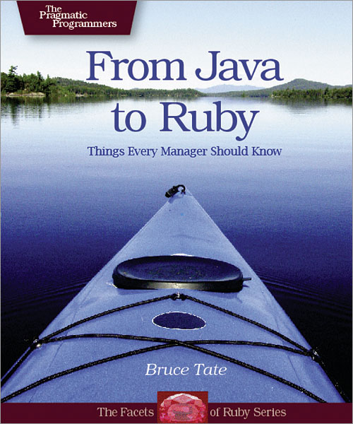
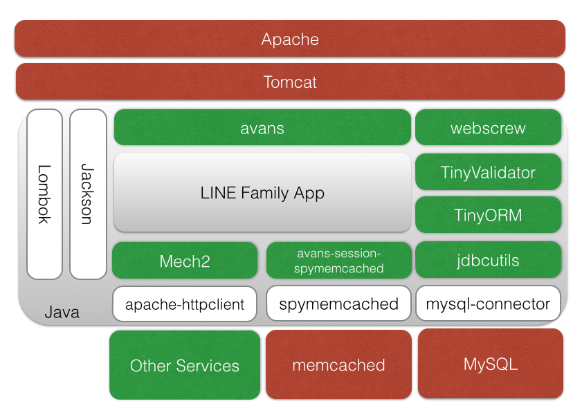

| z, ? | toggle help (this) |
| space, → | next slide |
| shift-space, ← | previous slide |
| b | blank screen |
| d | toggle debug mode |
| ## <ret> | go to slide # |
| c, t | table of contents (vi) |
| f | toggle footer |
| g | toggle follow |
| r | reload slides |
| n | toggle notes |
| p | run preshow |
| P | toggle pause |
| s | choose style |
$ whoami
新田 洋平
2014年9月入社
LINE ファミリーアプリサーバーサイド開発担当
ちょっと前は Python や AWS と戯れてました
twitter: @youhei
他もだいたい youhei
LINE Family App は Perl が主力です
Why we use Java?
Why we choose Java 8?


How we use Java8?
値が含まれている場合も
含まれていない場合もあるコンテナ・オブジェクト
配列, List, Map などのデータ構造の総称
「値がないかも」を明示して NullPointerException をさける
チェック漏れはコンパイラがチェックする
// 値がないと nobody
// Optional<String> maybeName
String name = maybeName.orElse("nobody");
// 値があると someMethod(d) を処理
// Optional<T> data
data.ifPresent(d -> someMethod(d));avans, tinyorm のコード例
利点はコード上に仕様が明記される、デフォルト値の考慮漏れもなくなる、の二点。
@GET("/api/items")
public WebResponse list(@Param("page") OptionalInt page) {
int pageNumber = page.orElse(1); // デフォルト値は 1SELECT FOR UPDATE した結果がある場合のみ DELETE を発行
TinyORM db = TinyORM(connection);
db.single(ItemRow.class)
.where("id=?", id)
.forUpdate()
.execute() // Optional<ItemRow> を返す
.ifPresent(row -> row.delete());
// ItemRow がある場合だけ DELETE!匿名クラスで関数を渡していた冗長な時代
辞書順にソートするコード。
// Java 7 以前の文法に沿った表現
Collections.sort(lists, new Comparator<String>() {
public int compare(final String o1, String o2) {
return o1.compareTo(o2);
}
});同じコードをラムダ式で書く。多くの要素を省略できる。
// 省略なし
Collections.sort(lists, (final String o1, final String o2) -> {
return o1.compareTo(o2);
});
// 処理が1行だとコードブロックの波括弧と return は省略可
Collections.sort(lists,
(final String o1, final String o2) -> o1.compareTo(o2));
// 型推論で引数の型宣言を省略可。final の明示はできなくなる。
// (引数が一個の場合、引数の括弧も省略可)
Collections.sort(lists, (o1, o2) -> o1.compareTo(o2));
// メソッド参照
Collections.sort(lists, String::compareTo);familyName に値を代入するとコンパイルエラー。知らないと大変ハマる。
ラムダ式内での値の変更もコンパイルエラー。
String familyName = "Isono"; // 実質的 final
family.forEach(
firstName -> {
System.out.println(
String.format("%s %s", firstName, familyName)
});
// familyName = "Fuguta"; このコメントを外すとコンパイルエラーちょっと覚えることが多い
avans, tinyorm のコード例
HttpServletResponse に依存した処理をラムダ式内で扱う。
CallbackResponse のラムダ式は csv() 内ではなく avans に処理を返してから遅延実行される。
@GET("/csv")
public WebResponse csv() {
return new CallbackResponse(resp -> {
resp.setContentType("text/csv; charset=UTF-8");
resp.setHeader("Content-Disposition",
"attachment;filename=my-file-name.csv");
CSVFormat format = CSVFormat.EXCEL;
try (Writer writer = resp.getWriter();
CSVPrinter csvPrinter = new CSVPrinter(writer, format)) {
csvPrinter.printRecord(
Arrays.asList("こんにちは", "世界"));
}
});
}GROUP BY したり JOIN する複雑なクエリは SQL を直接書くポリシー。
ResultSet をラムダ式内で扱う。
db.executeQuery(
"SELECT count(*) as cnt FROM item GROUP BY group_id",
rs -> {
List<Long> result = new ArrayList<>();
while (rs.next()) {
result.add(rs.getLong("cnt"));
}
return result;
});interface に default 実装を定義できるようになった。
さらっと扱われがちだけどとても大きな変更点。
interface Person {
String getFirstName;
String getFamilyName;
default String getFullName() {
return String.format("%s %s",
getFirstName(), getFamilyName());
}
}static method も定義できるようになった。
Collections, Paths のようなユーティリティメソッドを集めたコンパニオンクラスを
定義する理由は「これまでの慣習を尊重する」以外になくなった。
Collection, Path に static method を定義可能になったため。
interface Person {
static Person of() {
return new DefaultPerson("Foo", "Bar");
}
}avans のコード例
avans の plugin は Controller への Mix-in となっている。default method で実装する。
interface は状態を持てないのでその部分を PluginStash として avans が提供している。
// avans plugin
public interface SessionMixin extends Controller {
static final String STASH_KEY = "session";
public default WebSessionManager getSession() {
final Object session =
this.computePluginStashValueIfAbsent(
this.getClass(),
STASH_KEY, () -> {
return this.buildSessionManager();
});
return (WebSessionManager) session;
}
// 以下、省略
// Controller
public class FooController implements SessionMixin {価格が20ドルより大きい場合は10%引きして値引きした商品の金額合計を計算
public static void main(final String... args) {
int[] prices = {10, 20, 30, 40};
int totalOfDiscountedPrices = 0;
for(int price : prices) {
if (price > 20) {
totalOfDiscountedPrices =
totalOfDiscountedPrices + (int) (price * 0.9);
}
}
System.out.println("Total of discounted prices: " + totalOfDiscountedPrices);
}同様の計算を関数型スタイルにする
public static void main(final String... args) {
int[] prices = {10, 20, 30, 40};
int totalOfDiscountedPrices =
Arrays.stream(prices) // IntStream に変換
.filter(price -> price > 20) // 20 を超えるものを抜き出す
.map(price -> (int) (price * 0.9)) // 0.9 掛けした値に変換
.sum(); // 合計する
System.out.println("Total of discounted prices: " + totalOfDiscountedPrices);
}import lombok.NonNull;
public class NonNullExample extends Something {
private String name;
public NonNullExample(@NonNull Person person) {
super("Hello");
this.name = person.getName();
}
}import lombok.NonNull;
public class NonNullExample extends Something {
private String name;
public NonNullExample(@NonNull Person person) {
super("Hello");
if (person == null) {
throw new NullPointerException("person");
}
this.name = person.getName();
}
}javac や Eclipse Compiler for Java がソースコードを解釈して抽象構文木を生成し、バイトコードにコンパイルする
コンパイル時に AnnotationProcessor を利用して取得した抽象構文木を変換している。internal な API を呼んでいるとか。
JavaBeans の getter/setter, toString, hashCode, equals を生成する。
Jackson で受け渡しする JSON オブジェクトなどに多用してる
@Data
public class ContactForm {
@Email // tinyvalidator
private String email;
@NotNull // tinyvalidator
private String body;
}@Data の不変オブジェクト版(setter が生成されない)。
java.beans.ConstructorProperties でアノテーションされたコンストラクタを生成する。
TinyORM は ConstructorProperties を解釈するため、Row を不変オブジェクトにできる。
@Value
@Table("contact") // tinyorm
@EqualsAndHashCode(callSuper = false) // 継承先を考慮しない
public class ContactRow extends Row<ContactRow> {
@Column // tinyorm
private String email;
@Column
private String body;
}チェック例外を非チェック例外にして投げる。
Internal Server Error を返すしかないような例外はチェックせず SneakyThrows を使う。
ただ最近は SneakyThrows を使わず throws 節を宣言するのがトレンドになってきた。
@POST("/upload")
@SneakyThrows
public WebResponse upload(@UploadFile("file") Part file) {
String body = IOUtils.toString(
file.getInputStream(), "UTF-8");
return this.renderText(body);
}final なローカル変数を短く宣言できる。使おうかと思ったが、IntelliJ IDEA が未対応なので断念。
Eclipse でもエラーになるという噂がちらほら。
ただ、今となってはダイヤモンド演算子で十分とも思う。
import lombok.val;
public class Main {
public void main(String... args) {
// lombok.val
val example = new ArrayList<String>();
// diamond operator
final ArrayList<String> example2 = new ArrayList<>();必要にかられて作られている。
最低限の必要な機能を提供している。
足りない機能は Mix-in, 独自 Annotation で自分たちで拡張できる。
Spring Boot や Dropwizard より軽量
また、どんな汎用 micro framework にも使わない機能のためのコード、使わないミドルウェアのためのコードは必ずあるもの。
直接聞けることは良いことだ。
非互換の変更が入るとすぐアナウンスをもらえる。
サービスのコードが自然と Java 8 らしいコードに矯正される。
最悪自分たちでなんとかできる、というビジネス面でのメリット。
再び歩み始めた Java の継続的進化に追随しやすい、という技術面でのメリット。
別のことに時間を使える
Java SE 8 の言語仕様を知ったり、Servlet 3.x API を把握したり。
良いコードの書き方を知ることに時間を割こう。
やらなきゃいけないことも、やりたいこともまだまだたくさん
だからこそ楽しい